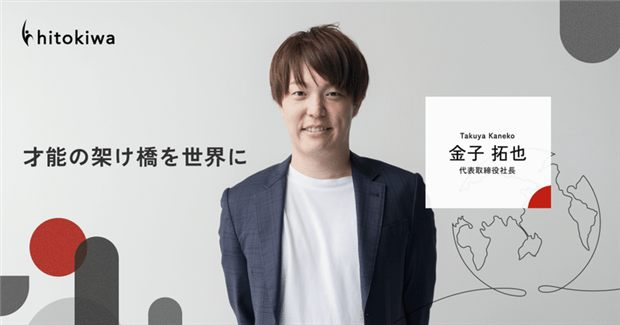
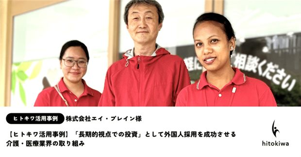
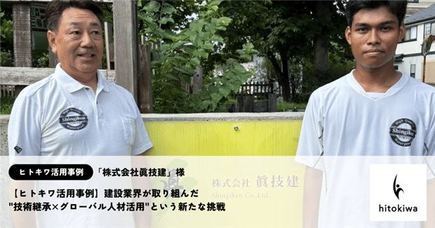
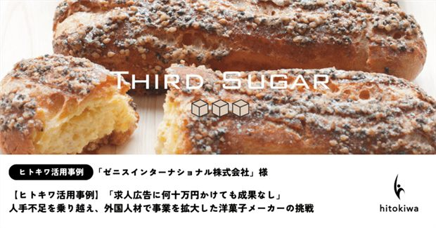
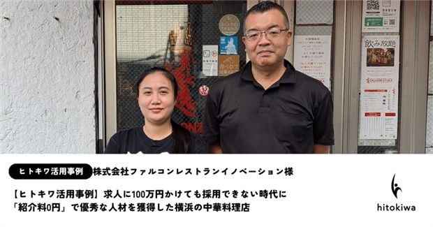
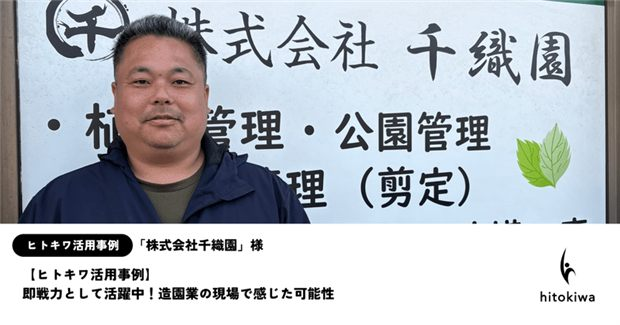

会社に合う採用のかたちを
30秒で診断
「人手が足りない。外国人採用も気になる。
でも、特定技能・技人国・ビザの違いがよくわからない」——そんな御社へ。
30秒・3つの質問に答えるだけ！御社に合った採用ルートと、いま紹介できる人材イメージがわかります。


あなたの会社に合う
外国人採用のかたちを診断します
外国人採用には「特定技能」「技人国（技術・人文知識・国際業務）」など複数のルートがあり、業種や求める働き方で最適解が変わります。さらに2026年の制度改正で、企業のカテゴリー区分によって手続きの難易度も変わりました。まずは3問でチェックしましょう。

まず30秒でチェック！
Q1.外国人材の採用について、御社の状況に近いものは？
Q2.御社の業種をお教えください
Q3.どんな人材を求めていますか？求める働き方によって、合う在留資格（採用ルート）が変わります
結果と、御社向けの資料を
メールでもお届けします
この後すぐ、画面に診断結果を表示します。あわせて、御社に合った採用ルートの詳しい資料を記入先へお送りします。登録不要・しつこい営業はしません。
ご入力情報は、診断結果の送付・ご相談対応のみに利用します。

DIAGNOSIS RESULT ／ 御社へのおすすめ

※ 上記は登録人材のイメージです。実際のご紹介可能な人材は、ご相談時に最新の情報をご案内します。

※ ヒトキワ公式note（自社メディア）の事例です。ほかにも多数あります。
無料オンライン相談・面談を申し込む
診断結果をもとに、御社専任の担当が最適な採用プラン・紹介できる人材・費用感までご案内します。その場で採用を決める必要はありません。
メールアドレスは前の画面で受付済みです。日程調整ツール（Calendly等）の連携も可能です。
お問い合わせ・無料相談
外国人採用について、御社専任の担当が、最適な採用ルート・ご紹介できる人材・費用感までご案内します。その場で採用を決める必要はありません。
送信いただいた情報は、ご相談対応の目的にのみ利用します。
お申し込みありがとうございます
内容を確認のうえ、担当者より順次ご連絡いたします。
外国人材の採用、定着まで、ヒトキワが伴走します。どうぞよろしくお願いいたします。
本診断は、業種・採用目的に応じた在留資格（採用ルート）の目安をご案内する簡易診断です。「特定技能」「技術・人文知識・国際業務（技人国）」の要件、企業カテゴリー区分・必要書類は、出入国在留管理庁の最新基準にてご確認ください。最終的な可否は個別審査によります。
外国人採用を、
はじめから、その先まで。
私たちのミッションは「才能の架け橋を世界に」。
日本の人手不足と、世界で活躍したい人の機会を結び、「採用してよかった」と思える出会いを増やします。
紹介して終わり、ではない
来日する方への日本語・ビジネスマナー教育から、採用後の定着フォローまで一緒に伴走します。
業種を問わない導入実績
介護・建設・製造・飲食・食品・造園など、幅広い現場での外国人採用を支援してきました。
採用コストの不安にも
「広告費をかけても採れなかった」企業が採用に成功した事例も多数。紹介料0円での採用事例もあります。
文化の壁を越えるチーム
多国籍・多様な経歴のスタッフが、文化の違いに寄り添いながら、企業と人材の橋渡しをします。
ヒトキワの取り組み・導入事例（一部）

代表インタビュー｜才能の架け橋を世界に
活用事例｜介護・医療業界
活用事例｜建設業界（技術継承）
活用事例｜洋菓子メーカー
活用事例｜中華料理店（紹介料0円）
活用事例｜造園業※ 画像はヒトキワ公式note（自社メディア）の記事です。ほかにも多数の事例があります。
「まずは話を聞いてみたい」「うちでもできる？」——その段階で大丈夫です。お気軽にご相談ください。